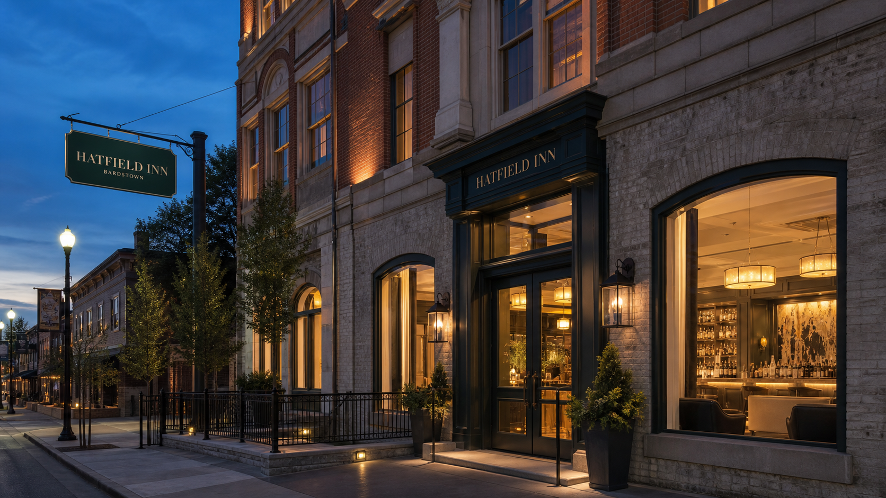

Hatfield Inns
72 roomsBardstown
Kentucky, USA · Distillery Inn

Individually designed boutique hotels where bourbon is part of the welcome, not the wallpaper.
View food & cocktailsKentucky, USA · Distillery Inn
Kentucky, USA · Stillwater
Kentucky, USA · Main Street
Kentucky, USA · Vine Street
Kentucky, USA · Keeneland Lodge
Tennessee, USA
England, United Kingdom · Marylebone
Scotland, United Kingdom · New Town